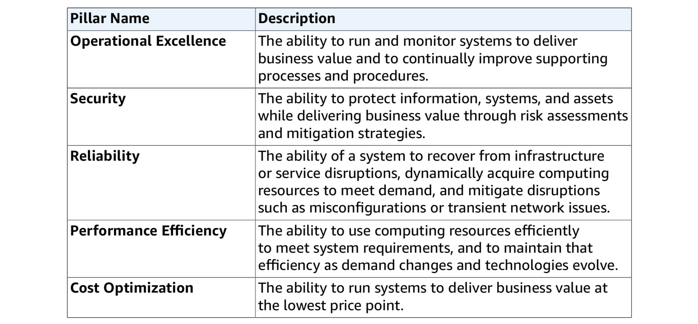

Miscellaneous
- In this section, we are going to look at many other services that AWS provides. They cannot be put into any other category exactly. Thus, we put them here for reference.
Simple Queue Service (SQS)
- SQS is a web service which provides a distributed, fault-tolerant message queue.
- Similar to other message queues, SQS helps to decouple the components of a complex system and serves as a temporary buffer.
- The body of a message in SQS can contain up to 256KB of text in any format.
- SQS provides two kinds of queues:
- Standard queue (default): nearly-unlimited number of transactions per second, messages would be delivered at least once, provide best-effort ordering only;
- FIFO queue: only up to 300 transactions per second, FIFO (first in first out), exactly-once processing.
- SQS is pull-based, not push-based.
- Messages can be kept in SQS from 1 minute to 14 days, with default retention period of 4 days.
- To best-effort avoid duplicate processing, SQS introduces the concept of visibility timeout. When a message gets picked up by one instance, it will be invisible to other instances until timeout (thus, that process shall delete it from SQS if the processing completes before timeout).
- SQS also provides long polling, which does not return a response until a message arrives, or the polling times out.
Simple Work Flow (SWF)
- SWF is a web service that helps to coordinate work across distributed application components.
- Workflow executions in SWF can last up to 1 year.
- SWF ensures that a task is assigned only once and is never duplicated.
- Tasks in SWF represent invocations of various processing steps in an application which can be performed by executable code, remote calls, and even human actions and others.
- SWF involves different actors in a workflow execution:
- Workflow starter: an application that initiates a workflow;
- Decider: controls the flow of activity tasks in an execution;
- Activity worker: carries out the activity tasks.
- SWF is similar to the finite state machine (FST) pattern.
Simple Notification Service (SNS)
- SNS is a web service which helps to send notification from the cloud.
- It allows to send push notifications to Apple, Google, FireOS, Windows devices;
- It reaches Android devices in China via Baidu Cloud Push.
- It can also send SMS text messages or email;
- It can push SQS queues;
- It can call any HTTP endpoint as well.
- It allows to send push notifications to Apple, Google, FireOS, Windows devices;
- Recipents of SNS notifications can be grouped using topics.
- Different from SQS, SNS is push-based (rather than pull-based).
Elastic Transcoder
- Elastic Transcoder is a media transcoder in the cloud.
- Basically, it helps to convert media files to different formats.
- The price is calculated based on the minutes of transcode process and the resolution of the transcode process.
- Elastic Transcoder provides transcoding presets for popular output formats.
API Gateway
- API Gateway is a fully managed service to help publish, maintain, monitor and secure APIs.
- In order to configure API gateway, you need to define an API, as well as the resources and nested resources.
- For each resource, need to setup the supported HTTP methods, security, and target.
- It is possible to enable caching for API Gateway for better performance.
- It is also possible to enable CORS policy on API Gateway, which would especially be useful for AJAX calls from frontend.
- You can throttle API Gateway to prevent DDOS attacks.
Kinesis
- Kinesis is a cloud platform to send, load and analyze streaming data.
- There are 3 different types of Kinesis services:
- Kinesis stream: consists of shards, up to 5 reads per second (2MB/s) and 1000 writes per second (1MB/s), retention period is 24 hours to 7 days, the data capacity of the stream is limited by the number of shards;
- Kinesis firehose: no persistent storage, can use a lambda function to store data to S3 or ES cluster;
- Kinesis analytics: helps to analyze data on-the-fly with Kinesis stream or Kinesis firehose.
Cognito
- Cognito is a web identity federation service that gives users access to AWS resources after being successfully authenticated with an identity provider such as Amazon, Facebook or Google.
- Congnito can help to synchronize user data for multiple mobile applications.
- Cognito acts as an identity broker between the identity providers and AWS resources using a JWT token.
- Cognito stores two kinds of data: user pool (for authentication) & identity pool (for authorization).
AWS Well-Architected Framework
- AWS Well-Architected Framework is a set of questions that you can use to evaluate how well your architecture is aligned to AWS practices.
- It consists of 5 pillars:
